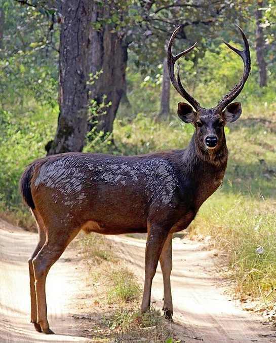
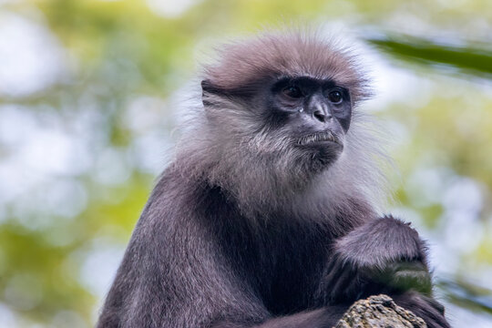
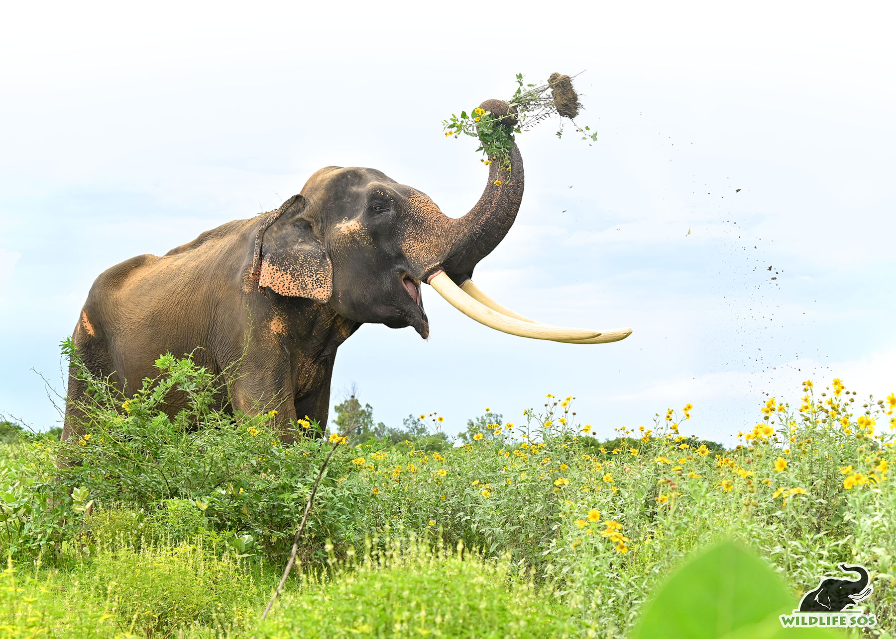
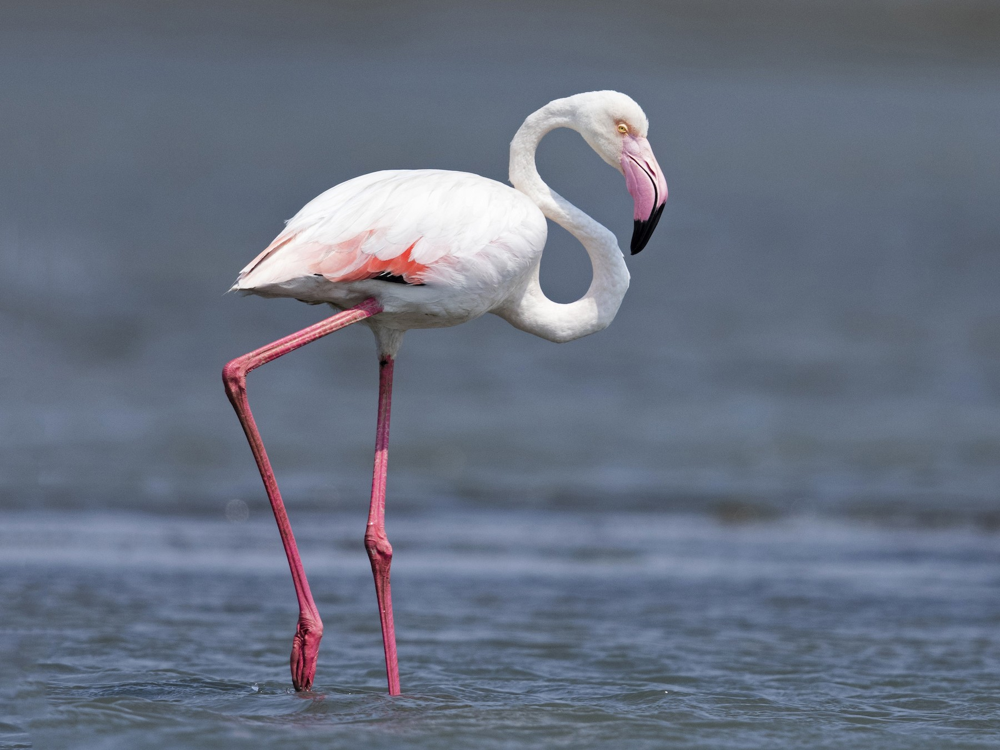

| Location | Animal Name | Interesting Facts | Image |
|---|---|---|---|
| Horton Plains National Park | Sambar Deer | Elusive deer species; found in open grasslands. |  |
| Sinharaja Forest Reserve | Purple-faced Langur | Endemic monkey species; distinctive purple face. |  |
| Minneriya National Park | Asian Elephant | Annual gathering of elephants known as 'The Gathering'. |  |
| Bundala National Park | Greater Flamingo | Wetland bird species; pink plumage. |  |
| Data compiled from recent wildlife surveys and conservation efforts. | |||